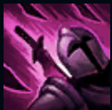
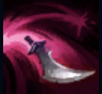
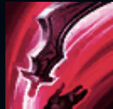
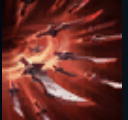

PASSIVE
VORACITY:
Whenever an enemy champion dies that Katarina has damaged recently, her remaining ability cooldowns are
dramatically reduced. If Katarina picks up a Dagger, she uses it to slash through all nearby enemies,
dealing magic damage.

Q
BOUNCING BLADE:
Katarina throws a Dagger at the target that then bounces to nearby enemies before ricocheting onto the
ground.

W
PREPARATION:
Katarina gains a burst of movement speed, tossing a Dagger into the air directly above herself.
E
SHUNPO:
Katarina blinks to the target, striking it if its an enemy, or striking the nearest enemy otherwise.

R
DEATH LOTUS:
Katarina becomes a flurry of blades, dealing massive magic damage while she channels to the 3 nearest
enemy champions.
Skin
Katarina
Death Sworn Katarina
Warring Kingdoms Katarina